JEE Main 2026 (Session 2), 5 Apr Shift 1: worked solutions for review
Questions and options are NTA’s own images; the green option is NTA’s final key. Every solution below was written by Claude
and checked against NTA’s final key. It is not NTA’s solution. Please mark anything unclear or wrong.
Q1 · Mathematics · MCQ · ID 695278301
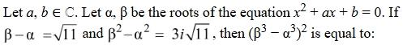
Hint 1: Use β² − α² = (β − α)(β + α) to find α + β.
Hint 2: α + β = 3i. Then (β − α)² = (α + β)² − 4αβ gives αβ. Finally β³ − α³ = (β − α)[(α + β)² − αβ].
What this tests: Symmetric functions of roots (with complex values).
1. √11(α + β) = 3i√11, so α + β = 3i.
2. 11 = (3i)² − 4αβ = −9 − 4αβ, so αβ = −5.
3. β³ − α³ = √11[(3i)² − (−5)] = √11(−9 + 5) = −4√11.
4. Squared: 16 × 11 = 176.
Answer: (2)
If this felt hard: Revise 'Quadratic Equations': write everything in terms of α + β and αβ.
Claude’s answer: 2 · NTA final key: 2 · agrees · Answer recomputed with SymPy (tools/verify_pyq_solutions.py)
Q2 · Mathematics · MCQ · ID 695278302
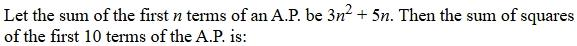
Hint 1: From Sn, find the n-th term: an = Sn − Sn−1.
Hint 2: an = 6n + 2. So you need Σ(6n + 2)² for n = 1 to 10.
What this tests: Terms of an AP from its sum; sums of squares.
1. Σ(6n + 2)² = 36Σn² + 24Σn + 4 × 10.
2. = 36(385) + 24(55) + 40 = 13860 + 1320 + 40 = 15220.
Answer: (3)
If this felt hard: Revise 'Sequences and Series'.
Claude’s answer: 3 · NTA final key: 3 · agrees · Answer recomputed with SymPy (tools/verify_pyq_solutions.py)
Q3 · Mathematics · MCQ · ID 695278303
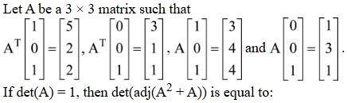
(1) 
(2) 
Hint 1: A·e1 is column 1 of A; AT·e1 is row 1. Subtract the given pairs to get these.
Hint 2: ATe1 = (5,2,2) − (3,1,1) = (2,1,1) = row 1; ATe3 = (3,1,1) = row 3; Ae1 = (2,1,3) = column 1; Ae3 = (1,3,1) = column 3. Only a22 is unknown; use det A = 1.
What this tests: Building a matrix from products with basis vectors; adjoint properties.
1. A = [[2,1,1],[1,a,3],[3,1,1]]; det A = 3 − a = 1, so a = 2.
2. det(adj M) = (det M)² for 3×3, and det(A² + A) = det A · det(A + I).
3. det(A + I) = det[[3,1,1],[1,3,3],[3,1,2]] = 8.
4. det(adj(A² + A)) = (1 × 8)² = 64.
Answer: (4)
If this felt hard: Revise 'Matrices and Determinants': det(adj M) = (det M)n−1 and det(AB) = det A · det B.
Claude’s answer: 4 · NTA final key: 4 · agrees · Answer recomputed with SymPy (tools/verify_pyq_solutions.py)
Q4 · Mathematics · MCQ · ID 695278304
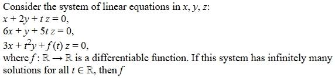
Hint 1: Infinitely many solutions for every t means the determinant is 0 for every t.
Hint 2: Expand the determinant: −11f(t) + t³ + 27t = 0.
What this tests: Homogeneous systems with non-trivial solutions; monotonicity.
1. f(t) = (t³ + 27t)/11.
2. f′(t) = (3t² + 27)/11 > 0 for all t.
3. So f is strictly increasing on ℝ.
Answer: (2)
If this felt hard: Revise 'Matrices and Determinants' and 'Application of Derivatives' (increasing functions).
Claude’s answer: 2 · NTA final key: 2 · agrees · Answer recomputed with SymPy (tools/verify_pyq_solutions.py)
Q5 · Mathematics · MCQ · ID 695278305
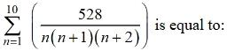
Hint 1: Split 1/(n(n+1)(n+2)) into a telescoping difference.
Hint 2: 1/(n(n+1)(n+2)) = ½[1/(n(n+1)) − 1/((n+1)(n+2))].
What this tests: Telescoping series.
1. Σn=1..10 = ½[1/2 − 1/(11 × 12)] = ½ × 65/132 = 65/264.
2. 528 × 65/264 = 130.
Answer: (2)
If this felt hard: Revise 'Sequences and Series': partial fractions for products of consecutive terms.
Claude’s answer: 2 · NTA final key: 2 · agrees · Answer recomputed with SymPy (tools/verify_pyq_solutions.py)
Q6 · Mathematics · MCQ · ID 695278306
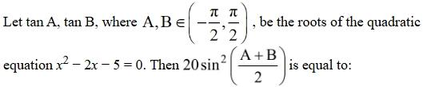
Hint 1: tan(A + B) from the sum and product of roots. Then which quadrant is A + B in?
Hint 2: tan(A + B) = 2/(1 + 5) = 1/3 > 0, and A + B lies in (0, π/2), so cos(A + B) = 3/√10. Use sin²(θ/2) = (1 − cos θ)/2.
What this tests: tan(A + B) from roots of a quadratic; half-angle formula.
1. cos(A + B) = 3/√10.
2. 20 sin²((A + B)/2) = 10(1 − 3/√10) = 10 − 3√10.
Answer: (3)
If this felt hard: Revise 'Trigonometric Functions'. Check the quadrant before taking the square root.
Claude’s answer: 3 · NTA final key: 3 · agrees · Answer recomputed with SymPy (tools/verify_pyq_solutions.py)
Q7 · Mathematics · MCQ · ID 695278307
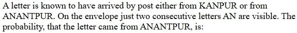
Hint 1: Use Bayes' theorem. In each word, how many pairs of consecutive letters are there, and how many of them are 'AN'?
Hint 2: KANPUR: 5 pairs, 1 'AN'. ANANTPUR: 7 pairs, 2 'AN'. Each city is equally likely beforehand.
What this tests: Bayes' theorem.
1. P(AN | Kanpur) = 1/5; P(AN | Anantpur) = 2/7.
2. P(Anantpur | AN) = (2/7)/(1/5 + 2/7) = (2/7)/(17/35) = 10/17.
Answer: (2)
If this felt hard: Revise 'Probability': Bayes' theorem. Counting the letter pairs carefully is the whole question.
Claude’s answer: 2 · NTA final key: 2 · agrees · Answer recomputed with SymPy (tools/verify_pyq_solutions.py)
Q8 · Mathematics · MCQ · ID 695278308
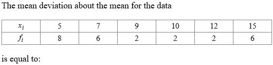
Hint 1: Find the mean first, then Σf|x − mean|/Σf.
Hint 2: Σf = 26, Σfx = 234, so the mean is 9.
What this tests: Mean deviation about the mean.
1. Σf|x − 9| = 8(4) + 6(2) + 2(0) + 2(1) + 2(3) + 6(6) = 88.
2. Mean deviation = 88/26 = 44/13.
Answer: (3)
If this felt hard: Revise 'Statistics'.
Claude’s answer: 3 · NTA final key: 3 · agrees · Answer recomputed with SymPy (tools/verify_pyq_solutions.py)
Q9 · Mathematics · MCQ · ID 695278309
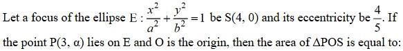
Hint 1: Focus (4, 0) and e = 4/5 give a. Then find b² and the y-coordinate of P.
Hint 2: ae = 4, so a = 5; b² = 25(1 − 16/25) = 9. Put x = 3 in the ellipse to find α.
What this tests: Ellipse: focus, eccentricity, area.
1. 9/25 + α²/9 = 1, so α² = 144/25 and |α| = 12/5.
2. Area of POS = ½ × OS × |α| = ½ × 4 × 12/5 = 24/5.
Answer: (3)
If this felt hard: Revise 'Conic Sections': ellipse.
Claude’s answer: 3 · NTA final key: 3 · agrees · Answer recomputed with SymPy (tools/verify_pyq_solutions.py)
Q10 · Mathematics · MCQ · ID 695278310
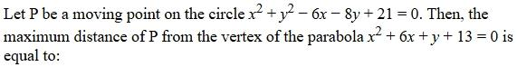
(1) 
(2) 
(3) 
Hint 1: Find the circle's centre and radius, and the parabola's vertex.
Hint 2: Circle: centre (3, 4), radius 2. Parabola: (x + 3)² = −(y + 4), vertex (−3, −4).
What this tests: Maximum distance from a point to a circle.
1. Distance from the centre to the vertex = √(36 + 64) = 10.
2. Maximum distance = 10 + 2 = 12.
Answer: (3)
If this felt hard: Revise 'Conic Sections'.
Claude’s answer: 3 · NTA final key: 3 · agrees · Answer recomputed with SymPy (tools/verify_pyq_solutions.py)
Q11 · Mathematics · MCQ · ID 695278311
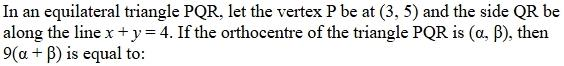
(1) 
(4) 
Hint 1: In an equilateral triangle the orthocentre is the centroid. It lies on the altitude from P, 2/3 of the way down.
Hint 2: Foot of the perpendicular from P(3, 5) to x + y = 4 is M(1, 3).
What this tests: Centres of an equilateral triangle.
1. Centroid = P + (2/3)(M − P) = (3, 5) + (2/3)(−2, −2) = (5/3, 11/3).
2. 9(α + β) = 9 × 16/3 = 48.
Answer: (4)
If this felt hard: Revise 'Straight Lines': foot of a perpendicular.
Claude’s answer: 4 · NTA final key: 4 · agrees · Answer recomputed with SymPy (tools/verify_pyq_solutions.py)
Q12 · Mathematics · MCQ · ID 695278312
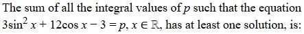
(2)
(3)
(4)
Hint 1: Write the left side in terms of c = cos x only.
Hint 2: 3sin²x + 12cos x − 3 = −3c² + 12c with c in [−1, 1]. This is increasing on [−1, 1].
What this tests: Range of a trigonometric expression.
1. Range: from −3 − 12 = −15 (c = −1) to −3 + 12 = 9 (c = 1).
2. Integers −15 to 9: sum = (−15 + 9) × 25/2 = −75.
Answer: (3)
If this felt hard: Revise 'Trigonometric Functions'. Check whether the vertex of the quadratic is inside [−1, 1] (here it isn't).
Claude’s answer: 3 · NTA final key: 3 · agrees · Answer recomputed with SymPy (tools/verify_pyq_solutions.py)
Q13 · Mathematics · MCQ · ID 695278313
(1) 
(2) 
(3) 
(4) 
Hint 1: Distance² = |AP|² − (projection of AP on the line)².
Hint 2: A = (2, 5, 2) is on the line, d = (2, 3, 4). AP = (3, 1, 5).
What this tests: Distance from a point to a line in 3D.
1. AP·d = 6 + 3 + 20 = 29 and |d|² = 29, so the projection² = 29.
2. |AP|² = 35.
3. Distance² = 35 − 29 = 6.
Answer: (3)
If this felt hard: Revise 'Three Dimensional Geometry'.
Claude’s answer: 3 · NTA final key: 3 · agrees · Answer recomputed with SymPy (tools/verify_pyq_solutions.py)
Q14 · Mathematics · MCQ · ID 695278314
(1)
(2)
(3)
(4)
Hint 1: Rewrite r × a + a × b = 0 as (r − b) × a = 0. What does that say about r − b?
Hint 2: r − b is parallel to a: r = b + λa. Then r·a = 0 gives λ.
What this tests: Vector equations with cross products.
1. a·b = 1 − 2 = −1 and |a|² = 9, so λ = 1/9.
2. r = (√7/9, 10/9, 17/9), |r|² = (7 + 100 + 289)/81 = 396/81.
3. |3r|² = 396/9 = 44.
Answer: (1)
If this felt hard: Revise 'Vector Algebra': a × b = 0 ⇔ a ∥ b.
Claude’s answer: 1 · NTA final key: 1 · agrees · Answer recomputed with SymPy (tools/verify_pyq_solutions.py)
Q15 · Mathematics · MCQ · ID 695278315
(1)
(2)
(3)
(4)
Hint 1: Equate the coordinates of the two lines. The z-coordinates give something quickly.
Hint 2: z: −1 = −1 + μa with a ≠ 0, so μ = 0. Then the point is (4, 0, −1).
What this tests: Intersection of two lines in 3D.
1. y: 1 − λ = 0, so λ = 1; x: 1 + a = 4, so a = 3.
2. Point (4, 0, −1): distance² = 16 + 1 = 17.
Answer: (3)
If this felt hard: Revise 'Three Dimensional Geometry'. Start with the coordinate that has the fewest unknowns.
Claude’s answer: 3 · NTA final key: 3 · agrees · Answer recomputed with SymPy (tools/verify_pyq_solutions.py)
Q16 · Mathematics · MCQ · ID 695278316
(1)
(2)
(3)
(4)
Hint 1: Sketch y = x², y = 27/x and y = 1 for x > 0. Where do the curves meet?
Hint 2: x² = 27/x at x = 3. 27/x = 1 at x = 27. Area = ∫ from 1 to 3 of (x² − 1) dx + ∫ from 3 to 27 of (27/x − 1) dx.
What this tests: Area bounded by curves.
1. ∫ from 1 to 3 of (x² − 1) dx = 20/3.
2. ∫ from 3 to 27 of (27/x − 1) dx = 27 ln 9 − 24 = 54 ln 3 − 24.
3. Area = 54 ln 3 − 52/3.
Answer: (2)
If this felt hard: Revise 'Application of Integrals'. A quick sketch shows where to split.
Claude’s answer: 2 · NTA final key: 2 · agrees · Answer recomputed with SymPy (tools/verify_pyq_solutions.py)
Note: Taken in the first quadrant, as intended; for x ≤ −1 the conditions would allow an unbounded region.
Q17 · Mathematics · MCQ · ID 695278317
(1) 
(2) 
(3) 
(4)
Hint 1: Use 1 − cos u ≈ u²/2 for small u. For a product: 1 − cos A cos B cos C ≈ (A² + B² + C²)/2.
Hint 2: The limit is [α² + (α+1)² + (α+2)²]/(2(α+1)²). Set it equal to 2.
What this tests: Standard limits for 1 − cos x.
1. α² + (α+1)² + (α+2)² = 4(α+1)².
2. With u = α + 1: 3u² + 2 = 4u², so u² = 2 and α = −1 ± √2.
3. Product = (−1)² − 2 = −1.
Answer: (3)
If this felt hard: Revise 'Limits'.
Claude’s answer: 3 · NTA final key: 3 · agrees · Answer recomputed with SymPy (tools/verify_pyq_solutions.py)
Q18 · Mathematics · MCQ · ID 695278318
(1)
(2)
(3)
(4)
Hint 1: Substitute x = 2t to make the denominator 4(t² + 1).
Hint 2: The integral becomes ½∫ from 0 to ∞ of (ln 2 + ln t)/(t² + 1) dt. Note ∫ from 0 to ∞ of ln t/(t² + 1) dt = 0 (put t = 1/u).
What this tests: Improper integrals with substitution symmetry.
1. ½[ln 2 × π/2 + 0] = (π ln 2)/4.
Answer: (2)
If this felt hard: Revise 'Definite Integrals': the t → 1/t trick.
Claude’s answer: 2 · NTA final key: 2 · agrees · Answer recomputed with SymPy (tools/verify_pyq_solutions.py)
Q19 · Mathematics · MCQ · ID 695278319
(1)
(2)
(3)
(4)
Hint 1: Find f(0) first, then show f is linear.
Hint 2: x = y = 0 gives f(0) = 0. y = 0 gives f(x/3) = f(x)/3. Then f(x + y) = f(x) + f(y), so f(x) = kx with k = f′(0) = 3.
What this tests: Functional equations; minimum of a function.
1. f(x) = 3x, so g(x) = 3 + 3xex.
2. g′ = 3ex(1 + x) = 0 at x = −1 (a minimum).
3. g(−1) = 3 − 3/e = 3(e − 1)/e.
Answer: (2)
If this felt hard: Revise 'Continuity and Differentiability' and 'Application of Derivatives'.
Claude’s answer: 2 · NTA final key: 2 · agrees · Answer recomputed with SymPy (tools/verify_pyq_solutions.py)
Q20 · Mathematics · MCQ · ID 695278320
(1)
(2)
(3)
(4)
Hint 1: Divide everything into powers of t = tan x, with dt = sec²x dx.
Hint 2: sec⁴x = sec²x(1 + t²) and cosec²x·sec⁴x = sec²x(1 + t²)²/t². The integrand becomes (2 + 3t² − 1/t²) dt.
What this tests: Integration by substitution t = tan x.
1. Antiderivative: 2t + t³ + 1/t.
2. At t = √3: 16/√3. At t = 1/√3: 16/(3√3).
3. Difference = 32/(3√3).
Answer: (3)
If this felt hard: Revise 'Integrals'. Converting everything to tan x is the standard move with sec⁴x.
Claude’s answer: 3 · NTA final key: 3 · agrees · Answer recomputed with SymPy (tools/verify_pyq_solutions.py)
Q21 · Mathematics · Numerical · ID 695278321
Hint 1: Start with f(2) + f(3) = 5. Which pairs are possible?
Hint 2: (f(2), f(3)) = (1,4), (2,3), (3,2), (4,1). For each, f(1) ≥ 3 must avoid the used values; the other 3 elements fill the rest in 3! ways.
What this tests: Counting one-one functions with conditions.
1. Each pair leaves exactly 3 choices for f(1).
2. Total = 4 × 3 × 6 = 72.
Answer: 72
If this felt hard: Revise 'Permutations and Combinations'. Fix the most restricted values first.
Claude’s answer: 72 · NTA final key: 72 · agrees · Answer recomputed with SymPy (tools/verify_pyq_solutions.py)
Q22 · Mathematics · Numerical · ID 695278322
Hint 1: A wins the series in game k (k = 5 to 9). The last game must be A's win.
Hint 2: A wins exactly 4 of the first k − 1 games: C(k − 1, 4) ways.
What this tests: Counting sequences where the last event is fixed.
1. Total = C(4,4) + C(5,4) + C(6,4) + C(7,4) + C(8,4) = 1 + 5 + 15 + 35 + 70 = 126.
Answer: 126
If this felt hard: Revise 'Permutations and Combinations'.
Claude’s answer: 126 · NTA final key: 126 · agrees · Answer recomputed with SymPy (tools/verify_pyq_solutions.py)
Q23 · Mathematics · Numerical · ID 695278323
Hint 1: General term: C(n, r)(−1)r x7r − 3n.
Hint 2: x⁷ and x¹⁴ need 7r − 3n = 7 and 14, so n is a multiple of 7: n = 7m, r = 3m + 1 and 3m + 2.
What this tests: Binomial coefficients and their symmetry.
1. The coefficients have opposite signs, so they cancel iff C(n, 3m+1) = C(n, 3m+2).
2. That needs (3m+1) + (3m+2) = n = 7m, so m = 3.
3. n = 21.
Answer: 21
If this felt hard: Revise 'Binomial Theorem': C(n, a) = C(n, b) ⇔ a = b or a + b = n.
Claude’s answer: 21 · NTA final key: 21 · agrees · Answer recomputed with SymPy (tools/verify_pyq_solutions.py)
Q24 · Mathematics · Numerical · ID 695278324
Hint 1: Write 2p−1 = 2p − 2p−1 and 22p−1 = 2p × 2p−1. Does it look like tan(A − B)?
Hint 2: Each term = tan−1(2p) − tan−1(2p−1). The sum telescopes.
What this tests: Telescoping inverse-tan sums.
1. Sum = tan−1(211) − tan−1(1) = tan−12048 − π/4.
2. α = tan−12048, so tan α = 2048.
Answer: 2048
If this felt hard: Revise 'Inverse Trigonometric Functions'.
Claude’s answer: 2048 · NTA final key: 2048 · agrees · Answer recomputed with SymPy (tools/verify_pyq_solutions.py)
Q25 · Mathematics · ID 695278325
Left out of the bank: special key (NTA).
Q26 · Physics · MCQ · ID 695278326
(1)
(2)
(3)
(4)
Hint 1: Least count = 1 mm/10. Is the zero error positive or negative when the Vernier zero is to the right?
Hint 2: To the right of the main zero means positive. Zero error = coinciding division × LC.
What this tests: Zero error of Vernier calipers.
1. LC = 0.1 mm.
2. Zero error = +7 × 0.1 = +0.7 mm = +0.07 cm.
Answer: (3)
If this felt hard: The trap is 0.7 cm (mm/cm mix-up). Revise 'Units and Measurements'.
Claude’s answer: 3 · NTA final key: 3 · agrees · Answer recomputed by script (tools/verify_pyq_solutions.py)
Q27 · Physics · MCQ · ID 695278327
(1)
(2)
(3)
(4)
Hint 1: Write the dimensions of R and of LC.
Hint 2: R = ML²T−3A−2. LC has dimension T² (since ω = 1/√(LC)).
What this tests: Dimensions of electrical quantities.
1. R/√(LC) = ML²T−3A−2/T = ML²T−4A−2.
Answer: (1)
If this felt hard: Remember √(LC) is a time. Revise 'Units and Measurements'.
Claude’s answer: 1 · NTA final key: 1 · agrees · Theory question: not computable, needs a teacher’s review
Q28 · Physics · MCQ · ID 695278328
(1) 
(2)
(3)
(4) 
Hint 1: Below the surface: g(1 − d/R). Above (small h): g(1 − 2h/R).
Hint 2: d = h = 16 km, R = 6400 km.
What this tests: Variation of g with depth and height.
1. gbelow = g(1 − 0.0025) and gabove = g(1 − 0.005).
2. Change = 0.0025g = 0.25%.
Answer: (2)
If this felt hard: Revise 'Gravitation'.
Claude’s answer: 2 · NTA final key: 2 · agrees · Answer recomputed by script (tools/verify_pyq_solutions.py)
Q29 · Physics · MCQ · ID 695278329
(1) 
(2) 
(3)
(4)
Hint 1: Treat m2 and m3 together (10 kg) against m1 (4 kg). Find the acceleration first.
Hint 2: a = (10 − 4)g/14 = 3g/7. T1 = m1(g + a); T2 supports m3: T2 = m3(g − a).
What this tests: Connected masses over a pulley.
1. T1 = 4(10 + 30/7) = 400/7 N.
2. T2 = 6(10 − 30/7) = 240/7 N.
3. T1/T2 = 5/3.
Answer: (1)
If this felt hard: Revise 'Laws of Motion'.
Claude’s answer: 1 · NTA final key: 1 · agrees · Answer recomputed by script (tools/verify_pyq_solutions.py)
Q30 · Physics · MCQ · ID 695278330
(1) 
(2) 
(3)
(4)
Hint 1: Work in the wedge's frame: a pseudo force −m×A acts on the block.
Hint 2: Down the slope: arel = g sin 37° − A cos 37°. The wedge: MA = f − N sin 37°, with N = mg cos 37° + mA sin 37°.
What this tests: Block on an accelerating wedge (pseudo force).
1. Solving: A ≈ 1.34 m/s² and arel ≈ 4.9 m/s².
2. t = √(2 × 8.8/4.9) ≈ 1.9 s, so the nearest option is 2 s.
3. (Taking A = f/(M + m) = 2 m/s² gives arel = 4.4 and exactly 2 s.)
Answer: (1)
If this felt hard: Revise 'Laws of Motion': non-inertial frames.
Claude’s answer: 1 · NTA final key: 1 · agrees · Answer recomputed by script (tools/verify_pyq_solutions.py)
Note: The exact two-body solution gives about 1.9 s; NTA's option 2 s matches the simpler approach A = f/(M + m). Agreed with the key as the nearest option.
Q31 · Physics · MCQ · ID 695278331
(1)
(2)
(3)
(4)
Hint 1: Does Young's modulus depend on the size of the wire?
Hint 2: Y is a property of the material only.
What this tests: Elastic moduli are material properties.
1. Changing r and L changes the extension, not Y.
Answer: (3)
If this felt hard: Revise 'Mechanical Properties of Solids'.
Claude’s answer: 3 · NTA final key: 3 · agrees · Theory question: not computable, needs a teacher’s review
Q32 · Physics · MCQ · ID 695278332
(1) 
(2) 
(3) 
(4) 
Hint 1: Check each statement, then ask whether II is the reason for I.
Hint 2: Cv = R/(γ − 1) follows from Cp − Cv = R. γ = 1 + 2/f comes from equipartition.
What this tests: Specific heats of ideal gases.
1. Statement I is true; Statement II is true.
2. I follows from Mayer's relation, not from II, so II is not the explanation.
Answer: (2)
If this felt hard: Revise 'Thermodynamics' and 'Kinetic Theory'.
Claude’s answer: 2 · NTA final key: 2 · agrees · Theory question: not computable, needs a teacher’s review
Q33 · Physics · MCQ · ID 695278333
(1)
(2) 
(3) 
(4)
Hint 1: In an isothermal process for an ideal gas, what is ΔU?
Hint 2: ΔU = 0, so ΔQ = ΔW. Intensive/mass ratios: extensive ÷ mass is intensive (e.g. specific volume).
What this tests: Laws of thermodynamics; intensive and extensive variables.
1. A true, B true.
2. C false (ΔQ = ΔW).
3. D true (e.g. P × V).
4. E false (it is intensive).
Answer: (3), A, B and D
If this felt hard: Revise 'Thermodynamics'.
Claude’s answer: 3 · NTA final key: 3 · agrees · Theory question: not computable, needs a teacher’s review
Q34 · Physics · MCQ · ID 695278334
(1)
(2)
(3)
(4)
Hint 1: Use node potentials. Take the bottom node as 0 V; the 5 V cell fixes the top node at 5 V.
Hint 2: Unknowns: the left node VL and the middle node VM. Write Kirchhoff's current law at each.
What this tests: Kirchhoff's laws (node method).
1. Solving gives VL = 7.5 V and VM = 0.
2. I1 (through 1 Ω and the 10 V cell) = 0 + 10 − 7.5 = 2.5 A.
3. I3 = 7.5/4 = 1.875 A; I2 (through the 5 V cell) = 2.5 − 0.625 = 1.875 A.
Answer: (1)
If this felt hard: Revise 'Current Electricity'. Node potentials need fewer equations than loops here.
Claude’s answer: 1 · NTA final key: 1 · agrees · Answer recomputed by script (tools/verify_pyq_solutions.py)
Q35 · Physics · MCQ · ID 695278335
(1)
(2)
(3)
(4)
Hint 1: Force on the electron = −eE. Which way does it point here?
Hint 2: −e(−2E0î) = +2eE0î, so the electron speeds up: v = v0 + 2eE0t/m.
What this tests: de Broglie wavelength of an accelerated electron.
1. λ = h/(mv) = h/(mv0(1 + 2eE0t/(mv0))).
2. h/(mv0) = 4λ0, so λ = 4λ0/[1 + 2E0et/(mv0)].
Answer: (3)
If this felt hard: The sign of the electron's charge is the trap. Revise 'Dual Nature of Matter and Radiation'.
Claude’s answer: 3 · NTA final key: 3 · agrees · Answer recomputed by script (tools/verify_pyq_solutions.py)
Q36 · Physics · MCQ · ID 695278336
(1) 
(2)
(3)
(4)
Hint 1: Bohr radius ∝ n². Find the two orbits from 16 : 4.
Hint 2: ni = 4, nf = 2. 1/λ = R(1/4 − 1/16).
What this tests: Bohr model and the hydrogen spectrum.
1. 1/λ = 3R/16, so λ = 16/(3 × 1.0973×10⁷) ≈ 486 nm.
Answer: (3)
If this felt hard: Revise 'Atoms'.
Claude’s answer: 3 · NTA final key: 3 · agrees · Answer recomputed by script (tools/verify_pyq_solutions.py)
Q37 · Physics · MCQ · ID 695278337
(1)
(2) 
(3) 
(4)
Hint 1: Displacement current = C × dV/dt.
Hint 2: dV/dt = Id/C.
What this tests: Displacement current.
1. dV/dt = 4/(6×10−6) ≈ 0.67 × 10⁶ V/s.
Answer: (2)
If this felt hard: Revise 'Electromagnetic Waves'.
Claude’s answer: 2 · NTA final key: 2 · agrees · Answer recomputed by script (tools/verify_pyq_solutions.py)
Q38 · Physics · MCQ · ID 695278338
(1)
(2) 
(3)
(4) 
Hint 1: The top three rows are identical: each is 15 V with 9 Ω. A and B are across the bottom row (9 Ω).
Hint 2: Identical cells in parallel: EMF 15 V, internal resistance 9/3 = 3 Ω.
What this tests: Combination of identical sources in parallel.
1. I = 15/(3 + 9) = 1.25 A.
Answer: (2)
If this felt hard: Revise 'Current Electricity'.
Claude’s answer: 2 · NTA final key: 2 · agrees · Answer recomputed by script (tools/verify_pyq_solutions.py)
Q39 · Physics · MCQ · ID 695278339
(1) 
(2)
(3) 
(4)
Hint 1: Fringe width β = λD/d. What happens to λ in a medium?
Hint 2: λ becomes λ/μ.
What this tests: YDSE in a medium.
1. β′ = 2.4/1.2 = 2 μm.
Answer: (2)
If this felt hard: Revise 'Wave Optics'.
Claude’s answer: 2 · NTA final key: 2 · agrees · Answer recomputed by script (tools/verify_pyq_solutions.py)
Q40 · Physics · MCQ · ID 695278340
(1)
(2)
(3) 
(4)
Hint 1: μ = c/v. Then use the prism formula with A = 60°.
Hint 2: μ = 3/2.12 ≈ 1.414 = √2. μ = sin((A + δ)/2)/sin(A/2).
What this tests: Refractive index and minimum deviation.
1. sin((60° + δ)/2) = √2 × ½ = 1/√2, so (60° + δ)/2 = 45°.
2. δmin = 30°.
Answer: (2)
If this felt hard: Revise 'Ray Optics'.
Claude’s answer: 2 · NTA final key: 2 · agrees · Answer recomputed by script (tools/verify_pyq_solutions.py)
Q41 · Physics · MCQ · ID 695278341
(1)
(2)
(3)
(4)
Hint 1: Einstein's equation: hc/λ = φ + eV0.
Hint 2: hc/λ = 6.62×10−34 × 3×10⁸/331×10−9 = 6.0 × 10−19 J. eV0 = 0.32 × 10−19 J.
What this tests: Photoelectric equation.
1. φ = 6.00 − 0.32 = 5.68 × 10−19 J.
Answer: (3)
If this felt hard: Revise 'Dual Nature of Matter and Radiation'.
Claude’s answer: 3 · NTA final key: 3 · agrees · Answer recomputed by script (tools/verify_pyq_solutions.py)
Q42 · Physics · MCQ · ID 695278342
(1)
(2)
(3)
(4)
Hint 1: Cutting a biconvex lens into two plano-convex halves: what happens to each half's focal length?
Hint 2: Each half has focal length 2f. Microscope magnification ≈ (L/fo)(D/fe).
What this tests: Focal length of lens parts; compound microscope.
1. fo doubles, so L must double to keep the same magnification.
Answer: (1)
If this felt hard: Revise 'Ray Optics'.
Claude’s answer: 1 · NTA final key: 1 · agrees · Theory question: not computable, needs a teacher’s review
Q43 · Physics · MCQ · ID 695278343
(1) 
(2) 
(3)
(4)
Hint 1: Each wire carries everything below it. Find the limit for each wire separately.
Hint 2: Breaking force = stress × area. Upper: 12×10⁸ × 8×10−7 = 960 N. Lower: 480 N.
What this tests: Breaking stress in hanging wires.
1. Upper: (30 + 10 + m)g ≤ 960, so m ≤ 56 kg.
2. Lower: (10 + m)g ≤ 480, so m ≤ 38 kg.
3. Maximum = 38 kg.
Answer: (2)
If this felt hard: The trap 56 kg checks only the upper wire. Revise 'Mechanical Properties of Solids'.
Claude’s answer: 2 · NTA final key: 2 · agrees · Answer recomputed by script (tools/verify_pyq_solutions.py)
Q44 · Physics · MCQ · ID 695278344
(1)
(2)
(3)
(4)
Hint 1: I = V/√(R² + XC²). What happens to XC at ω/4?
Hint 2: XC becomes 4XC. Set √(R² + 16XC²) = 3√(R² + XC²).
What this tests: RC circuit impedance.
1. R² + 16XC² = 9R² + 9XC², so 7XC² = 8R².
2. R/XC = √(7/8).
Answer: (3)
If this felt hard: Revise 'Alternating Current'.
Claude’s answer: 3 · NTA final key: 3 · agrees · Answer recomputed by script (tools/verify_pyq_solutions.py)
Q45 · Physics · MCQ · ID 695278345
(1)
(2)
(3)
(4)
Hint 1: LED-1 needs the OR output to be 1. LED-2 needs (OR AND C) AND A to be 1.
Hint 2: So A + B = 1, C = 1 and A = 1.
What this tests: Logic gates.
1. A = 1 and C = 1 (B can be anything).
2. Only option 3 (A = 1, B = 0, C = 1) works.
Answer: (3)
If this felt hard: Revise 'Semiconductor Electronics'.
Claude’s answer: 3 · NTA final key: 3 · agrees · Theory question: not computable, needs a teacher’s review
Q46 · Physics · Numerical · ID 695278346
Hint 1: Modulus of rigidity η = (F/A)/(Δx/L).
Hint 2: Δx = FL/(Aη), with A = (0.05)² m² and L = 0.05 m.
What this tests: Shear strain.
1. Δx = 10 × 0.05/(0.0025 × 10⁵) = 0.002 m = 2 mm.
Answer: 2
If this felt hard: Revise 'Mechanical Properties of Solids'.
Claude’s answer: 2 · NTA final key: 2 · agrees · Answer recomputed by script (tools/verify_pyq_solutions.py)
Q47 · Physics · Numerical · ID 695278347
Hint 1: v = g numerically means v = 10 m/s. How far has it fallen then?
Hint 2: v² = 2gs.
What this tests: Free fall.
1. s = 100/20 = 5 m.
2. Height = 18 − 5 = 13 m.
Answer: 13
If this felt hard: Revise 'Motion in a Straight Line'.
Claude’s answer: 13 · NTA final key: 13 · agrees · Answer recomputed by script (tools/verify_pyq_solutions.py)
Q48 · Physics · Numerical · ID 695278348
Hint 1: Distance between successive crests = wavelength = 2π/k.
Hint 2: k = 0.018 per cm.
What this tests: Wave equation parameters.
1. λ = 2 × 3.14/0.018 ≈ 348.9 cm ≈ 349 cm.
Answer: 349
If this felt hard: Revise 'Waves'.
Claude’s answer: 349 · NTA final key: 349 · agrees · Answer recomputed by script (tools/verify_pyq_solutions.py)
Q49 · Physics · Numerical · ID 695278349
Hint 1: Magnetic force is always perpendicular to B, so a·B = 0.
Hint 2: (4, −x/2)·(3, 2) = 0.
What this tests: Direction of the magnetic force.
1. 12 − x = 0, so x = 12.
Answer: 12
If this felt hard: Revise 'Moving Charges and Magnetism'.
Claude’s answer: 12 · NTA final key: 12 · agrees · Answer recomputed by script (tools/verify_pyq_solutions.py)
Q50 · Physics · Numerical · ID 695278350
Hint 1: L1 carries the full current I; L2 and L3 share it equally.
Hint 2: U = ½LI² for each inductor.
What this tests: Energy stored in inductors.
1. Ut = ½LI² + 2 × ½L(I/2)² = ¾LI².
2. U2 = ½L(I/2)² = LI²/8.
3. Ratio = 6.
Answer: 6
If this felt hard: Revise 'Electromagnetic Induction'.
Claude’s answer: 6 · NTA final key: 6 · agrees · Answer recomputed by script (tools/verify_pyq_solutions.py)
Q51 · Chemistry · MCQ · ID 695278351
(1)
(2)
(3)
(4)
Hint 1: On heating, Ag2CO3 finally leaves metallic silver.
Hint 2: M(Ag2CO3) = 276. 1 mol gives 2 mol Ag.
What this tests: Thermal decomposition stoichiometry.
1. 2.76 g = 0.01 mol, giving 0.02 mol Ag = 2.16 g.
Answer: (2)
If this felt hard: Revise 'Some Basic Concepts of Chemistry'.
Claude’s answer: 2 · NTA final key: 2 · agrees · Answer recomputed by script (tools/verify_pyq_solutions.py)
Q52 · Chemistry · MCQ · ID 695278352
(1)
(2)
(3)
(4)
Hint 1: Use the (n + l) rule; for equal n + l, lower n first.
Hint 2: A 3d: 5; B 4s: 4; C 6p: 7; D 5p: 6; E 2p: 3.
What this tests: Aufbau (n + l) rule.
1. Order: E < B < A < D < C.
Answer: (4)
If this felt hard: Revise 'Structure of Atom'.
Claude’s answer: 4 · NTA final key: 4 · agrees · Theory question: not computable, needs a teacher’s review
Q53 · Chemistry · MCQ · ID 695278353
(1) 
(2) 
(3) 
(4) 
Hint 1: Check each statement. For C, is the 2s energy the same in H and Li?
Hint 2: In multi-electron atoms the energy depends on Z and on shielding.
What this tests: Atomic structure basics.
1. A true, B true, D true (Cr is 3d⁵4s¹).
2. C false: the 2s energies of H and Li differ.
Answer: (2)
If this felt hard: Revise 'Structure of Atom'.
Claude’s answer: 2 · NTA final key: 2 · agrees · Theory question: not computable, needs a teacher’s review
Q54 · Chemistry · MCQ · ID 695278354
(1)
(2)
(3)
(4)
Hint 1: Take 100 g of solution: 10 g urea and 90 g water.
Hint 2: Urea = 10/60 mol; water = 90/18 = 5 mol.
What this tests: Mole fraction from mass percent.
1. xwater = 5/(5 + 1/6) = 30/31 ≈ 0.967.
Answer: (4)
If this felt hard: Revise 'Solutions'.
Claude’s answer: 4 · NTA final key: 4 · agrees · Answer recomputed by script (tools/verify_pyq_solutions.py)
Q55 · Chemistry · MCQ · ID 695278355
(1)
(2)
(3)
(4)
Hint 1: M3A2 → 3M²⁺ + 2A³⁻. Molar solubility s = x/y.
Hint 2: [A³⁻] = 2s and Ksp = (3s)³(2s)² = 108s⁵.
What this tests: Solubility product.
1. Ratio = 2s/(108s⁵) = 1/(54s⁴) = (1/54)(y⁴/x⁴).
Answer: (1)
If this felt hard: Revise 'Equilibrium'.
Claude’s answer: 1 · NTA final key: 1 · agrees · Answer recomputed by script (tools/verify_pyq_solutions.py)
Q56 · Chemistry · MCQ · ID 695278356
(1)
(2)
(3)
(4)
Hint 1: Count millimoles of H⁺ and OH⁻ in each mixture.
Hint 2: A: OH⁻ 4, H⁺ 2.5. B: H⁺ 0.2, OH⁻ 0.2. C: H⁺ 2, OH⁻ 1.
What this tests: pH of acid–base mixtures.
1. A is basic, B is neutral, C is acidic.
2. Increasing pH: C < B < A.
Answer: (3)
If this felt hard: Revise 'Equilibrium'. Remember H2SO4 gives 2 H⁺ and Ca(OH)2 gives 2 OH⁻.
Claude’s answer: 3 · NTA final key: 3 · agrees · Answer recomputed by script (tools/verify_pyq_solutions.py)
Q57 · Chemistry · MCQ · ID 695278357
(1)
(2)
(3)
(4)
Hint 1: Let x of A react. Then pA = pi − x and pt = pi + x.
Hint 2: x = pt − pi, so pA = 2pi − pt.
What this tests: First-order gas reactions using pressure.
1. k = (1/t) ln(pi/(2pi − pt)).
Answer: (1)
If this felt hard: Revise 'Chemical Kinetics'.
Claude’s answer: 1 · NTA final key: 1 · agrees · Theory question: not computable, needs a teacher’s review
Q58 · Chemistry · MCQ · ID 695278358
(1)
(2) 
(3)
(4) 
Hint 1: Electronegativity: F 4.0, O 3.5, N 3.0. O in OF2: F is more electronegative.
Hint 2: OF2: O is +2. Na2O: O is −2.
What this tests: Electronegativity and oxidation states.
1. Both statements are true.
Answer: (1)
If this felt hard: Revise 'Classification of Elements' and 'p-Block Elements'.
Claude’s answer: 1 · NTA final key: 1 · agrees · Theory question: not computable, needs a teacher’s review
Q59 · Chemistry · MCQ · ID 695278359
(1) 
(2) 
(3)
(4)
Hint 1: Check each statement against NCERT's group 15 section.
Hint 2: Nitrogen forms pπ–pπ (not dπ–pπ) bonds; the N−N single bond is weaker than P−P; density increases down the group.
What this tests: Anomalous properties of nitrogen.
1. A true (N in +1 to +4 disproportionates in acid).
2. B false, C false, D false.
3. E true (only four valence orbitals).
Answer: (4), A and E
If this felt hard: Revise 'p-Block Elements' (group 15).
Claude’s answer: 4 · NTA final key: 4 · agrees · Theory question: not computable, needs a teacher’s review
Q60 · Chemistry · MCQ · ID 695278360
(1)
(2)
(3)
(4)
Hint 1: Recall NCERT's properties of interstitial compounds (TiC, Mn4N, Fe3H…).
Hint 2: They are hard, have high melting points, keep metallic conductivity, are chemically inert and often non-stoichiometric.
What this tests: Interstitial compounds.
1. 'Very soft and ionic' is NOT a property.
Answer: (2)
If this felt hard: Revise 'd- and f-Block Elements'.
Claude’s answer: 2 · NTA final key: 2 · agrees · Theory question: not computable, needs a teacher’s review
Q61 · Chemistry · MCQ · ID 695278361
(1) 
(2)
(3) 
(4) 
Hint 1: Synergic bonding: σ donation from CO and π back-donation from the metal. Does that weaken or strengthen M−C?
Hint 2: Back-donation strengthens the M−C bond (and weakens C≡O).
What this tests: Bonding in metal carbonyls.
1. A, C and D are true.
2. B is false: the M−C bond becomes stronger.
Answer: (2)
If this felt hard: Revise 'Coordination Compounds'.
Claude’s answer: 2 · NTA final key: 2 · agrees · Theory question: not computable, needs a teacher’s review
Q62 · Chemistry · MCQ · ID 695278362
(1) 
(2)
(3)
(4)
Hint 1: Recall the CFT energy values for eg and t2g.
Hint 2: eg: +0.6Δo; t2g: −0.4Δo. Free-ion d orbitals are degenerate; ligands split them.
What this tests: Crystal field theory.
1. Both statements are correct.
Answer: (1)
If this felt hard: Revise 'Coordination Compounds'.
Claude’s answer: 1 · NTA final key: 1 · agrees · Theory question: not computable, needs a teacher’s review
Q63 · Chemistry · MCQ · ID 695278363
(1)
(2) 
(3) 
(4) 
Hint 1: Alkyl groups push electrons (+I). Is that good or bad for a carbanion?
Hint 2: +I destabilises carbanions, so fewer alkyl groups is better. Allyl and benzyl carbanions are stabilised by resonance.
What this tests: Carbanion stability.
1. Statement I true.
2. Statement II false (it is resonance, not induction).
Answer: (3)
If this felt hard: Revise 'Basic Principles of Organic Chemistry'.
Claude’s answer: 3 · NTA final key: 3 · agrees · Theory question: not computable, needs a teacher’s review
Q64 · Chemistry · MCQ · ID 695278364
(1)
(2)
(3)
(4)
Hint 1: Work backwards: the iodoform test turns COCH3 into COOH. So R is 1-acetyl-2-methylcyclopentene.
Hint 2: R comes from an intramolecular aldol of a diketone Q. CH3CO(CH2)4COCH3 (octane-2,7-dione) closes to a five-membered ring.
What this tests: Ozonolysis, intramolecular aldol, haloform reaction.
1. Octane-2,7-dione comes from ozonolysis of 1,2-dimethylcyclohexene (C8H14).
2. Aldol: the CH2 next to one C=O attacks the other C=O, closes a 5-ring, then dehydration gives R.
3. Iodoform turns the acetyl group into COOH, giving S.
Answer: (4)
If this felt hard: Revise 'Aldehydes and Ketones' (aldol, haloform) and 'Hydrocarbons' (ozonolysis).
Claude’s answer: 4 · NTA final key: 4 · agrees · Theory question: not computable, needs a teacher’s review
Q65 · Chemistry · MCQ · ID 695278365
(1)
(2)
(3)
(4)
Hint 1: 1-Chloropropane with AlCl3 gives a primary carbocation. What does it do?
Hint 2: It rearranges (hydride shift) to the isopropyl cation, so cumene is the major product. Alkylbenzenes are more reactive than benzene.
What this tests: Friedel–Crafts alkylation: rearrangement and polyalkylation.
1. A false (major product is isopropylbenzene).
2. B true. C true (polyalkylation happens).
3. D false (electron donors make substitution easier).
Answer: (2), B and C
If this felt hard: Revise 'Hydrocarbons'.
Claude’s answer: 2 · NTA final key: 2 · agrees · Theory question: not computable, needs a teacher’s review
Q66 · Chemistry · MCQ · ID 695278366
(1) 
(2) 
(3) 
(4)
Hint 1: Isocyanides come from AgCN (attack through N) or the carbylamine reaction of a primary amine.
Hint 2: Benzyl isocyanide is PhCH2NC, so you need a benzyl group.
What this tests: Preparation of isocyanides.
1. A: PhCH2Br + AgCN gives PhCH2NC ✓.
2. B: PhCH2NH2 + CHCl3/NaOH gives PhCH2NC ✓.
3. C and D give phenyl derivatives (or don't react); E gives a nitrile.
Answer: (1)
If this felt hard: Revise 'Amines' and 'Haloalkanes' (KCN vs AgCN).
Claude’s answer: 1 · NTA final key: 1 · agrees · Theory question: not computable, needs a teacher’s review
Q67 · Chemistry · MCQ · ID 695278367
(1)
(2)
(3)
(4)
Hint 1: Going from the alcohol A to the alkene B is a dehydration. What reagent does that?
Hint 2: Conc. H2SO4 or H3PO4. The diol C loses two waters, giving a conjugated diene.
What this tests: Dehydration of alcohols.
1. D = conc. H2SO4 or H3PO4.
2. E = CH2=CH−CH=CH−CH3.
Answer: (4)
If this felt hard: PCC oxidises alcohols; it doesn't dehydrate them. Revise 'Alcohols, Phenols and Ethers'.
Claude’s answer: 4 · NTA final key: 4 · agrees · Theory question: not computable, needs a teacher’s review
Q68 · Chemistry · MCQ · ID 695278368
(1)
(2) 
(3) 
(4) 
Hint 1: The question asks for INCORRECT statements. Check each one.
Hint 2: Gabriel synthesis can't make aryl amines. Hofmann bromamide on PhCH2CONH2 gives PhCH2NH2: the NH2 is not on the ring.
What this tests: Preparation and basicity of amines.
1. A correct (benzylamine is more basic).
2. B incorrect. C incorrect.
3. D correct (p-nitrophenol dissolves in NaOH).
Answer: (3), B and C
If this felt hard: Revise 'Amines'.
Claude’s answer: 3 · NTA final key: 3 · agrees · Theory question: not computable, needs a teacher’s review
Q69 · Chemistry · MCQ · ID 695278369
(1) 
(2)
(3)
(4)
Hint 1: Recall NCERT's facts about α- and β-glucose.
Hint 2: α-glucose: m.p. 419 K, [α] = +112°. β-glucose: m.p. 423 K, [α] = +19°.
What this tests: Anomers of glucose.
1. A and B are true.
2. C false (β melts higher). D false (values swapped).
3. E true (α at 303 K, β at 371 K).
Answer: (4), A, B and E
If this felt hard: Revise 'Biomolecules'.
Claude’s answer: 4 · NTA final key: 4 · agrees · Theory question: not computable, needs a teacher’s review
Q70 · Chemistry · MCQ · ID 695278370
(1)
(2) 
(3) 
(4) 
Hint 1: Is sodium dichromate a primary standard? Is phenolphthalein an acid or a base?
Hint 2: Na2Cr2O7 is hygroscopic. Phenolphthalein is a weak acid.
What this tests: Primary standards and indicators.
1. Both statements are false.
Answer: (2)
If this felt hard: Revise 'd-Block' (dichromates) and acid–base indicators.
Claude’s answer: 2 · NTA final key: 2 · agrees · Theory question: not computable, needs a teacher’s review
Q71 · Chemistry · Numerical · ID 695278371
Hint 1: sp³d means 5 electron pairs (bond pairs + lone pairs) around the centre.
Hint 2: Count bp + lp: SF4 4+1, ClF3 3+2, XeF2 2+3, ICl2⁻ 2+3. BrF5, ICl4⁻, XeF4 have 6; XeF5⁻ has 7.
What this tests: Hybridisation via VSEPR.
1. SF4, ClF3, XeF2, ICl2⁻ are sp³d.
Answer: 4
If this felt hard: Revise 'Chemical Bonding'.
Claude’s answer: 4 · NTA final key: 4 · agrees · Theory question: not computable, needs a teacher’s review
Q72 · Chemistry · Numerical · ID 695278372
Hint 1: Mass of S = (32/231) × mass of BaSO4.
Hint 2: %S = (0.6 × 32/231)/0.2 × 100.
What this tests: Carius estimation of sulphur.
1. Mass of S = 0.0831 g.
2. %S = 41.6%, so 42 to the nearest integer (NTA accepts 41 or 42).
Answer: 42
If this felt hard: Revise 'Purification and Characterisation of Organic Compounds'.
Claude’s answer: 42 · NTA final key: 41 · DISAGREES: flag for the owner · Answer recomputed by script (tools/verify_pyq_solutions.py)
Q73 · Chemistry · Numerical · ID 695278373
Hint 1: Phenol with dilute HNO3 gives o- and p-nitrophenol. Which is steam volatile?
Hint 2: o-Nitrophenol (intramolecular H-bonding), C6H5NO3, M = 139.
What this tests: Nitration of phenol; percentage composition.
1. %O in phenol = 16/94 = 17.02%. %O in X = 48/139 = 34.53%.
2. Increase = 17.5% = 175 × 10−1%.
Answer: 175
If this felt hard: Revise 'Alcohols, Phenols and Ethers'.
Claude’s answer: 175 · NTA final key: 175 · agrees · Answer recomputed by script (tools/verify_pyq_solutions.py)
Q74 · Chemistry · Numerical · ID 695278374
Hint 1: van 't Hoff: log Kp = −ΔH°/(2.303R) × (1/T) + constant.
Hint 2: Slope of log Kp vs 1/T = (2.5 − 3.5)/(0.06 − 0.05) = −100.
What this tests: van 't Hoff equation.
1. ΔH°/(2.303R) = 100, so ΔH°/R = 230.3 ≈ 230.
Answer: 230
If this felt hard: Revise 'Equilibrium' / 'Thermodynamics'.
Claude’s answer: 230 · NTA final key: 230 · agrees · Answer recomputed by script (tools/verify_pyq_solutions.py)
Q75 · Chemistry · Numerical · ID 695278375
Hint 1: First order: k = 0.693/t1/2. Time for 99% = (2.303/k) log(100/1).
Hint 2: k = 0.1 per minute.
What this tests: First-order kinetics.
1. t = 2.303 × 2/0.1 = 46.06 ≈ 46 min.
Answer: 46
If this felt hard: Revise 'Chemical Kinetics'.
Claude’s answer: 46 · NTA final key: 46 · agrees · Answer recomputed by script (tools/verify_pyq_solutions.py)